CCH iFirm by
Wolters Kluwer
Designing continuity across a fragmented SaaS ecosystem
From on-premise to cloud
Global iFirm was evolving from a collection of products into a more connected cloud experience.
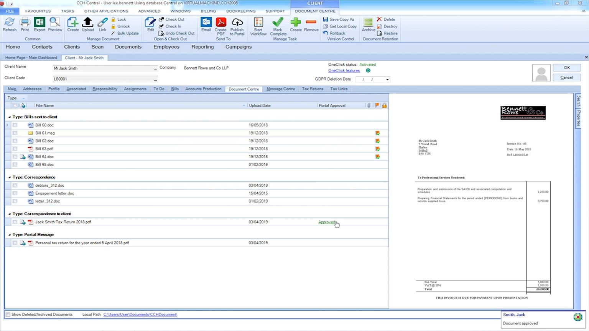
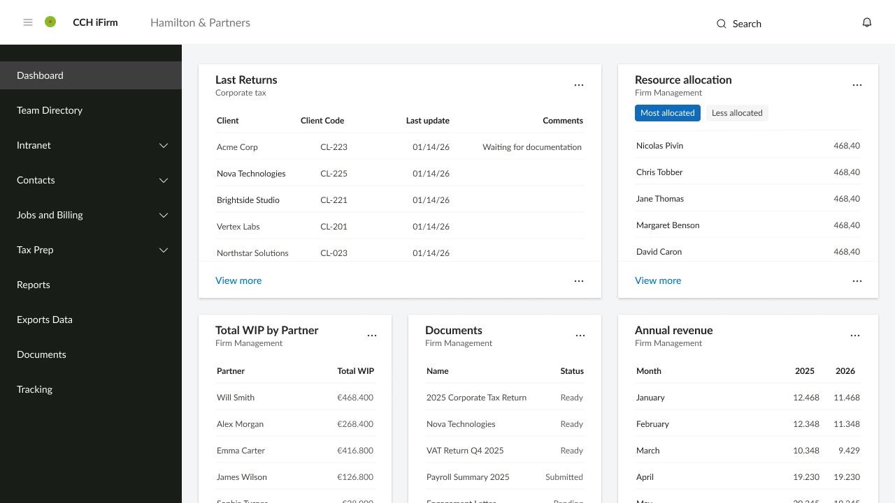
How might we help users move between products without losing context?
Users don't think in products or clients. They think in the work they need to do.
There is a mismatch between the user's mental model and the product model.
“I'm working on a tax return.”
“I'm working on a client.” “I'm working on a product.”
Shift the experience from client-based navigation towards workflow continuity.
- 5Foundational research sessions with existing customers
- 2Meetings with subject matter experts
Unifying the Wolters Kluwer product ecosystem exposed a fundamental information architecture problem.
Model
Step 1
Step 2
Step 3
Risk
Client-context products
Select a client
Select a product
Work
Systems only work with a client selected
Firm-context products
Select a product
Select a client
Work
Breaks workflow continuity
The risk of client-context
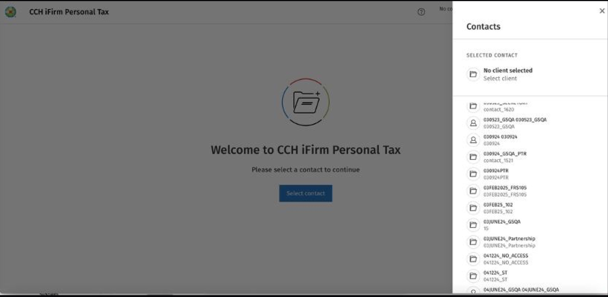
- 01On-premise and CCH iFirm compliance apps are client centric
- 02Some applications only work with client context
- 03The current client switcher opens the full list of clients
- 04The component is inefficient: slow and not smart
The risk of firm-context
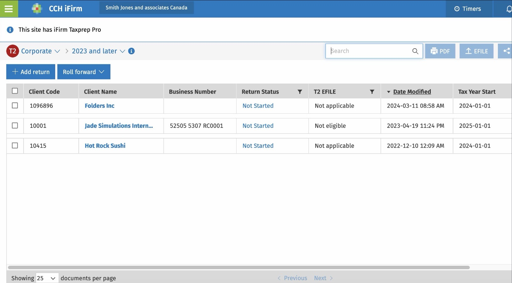
- 01Doesn't support a continuous workflow
- 02Users have to go back and forward to select another client
- 03Open the selected client documentation or data
- 04Move to the next job
The product makes users navigate between contexts instead of helping them progress through their work.
How can we make client context persistent across the experience without adding another layer of navigation or creating unnecessary development complexity?
From problem definition to implementation
Users were working across multiple products, but the experience didn't preserve their client context.
Conducted foundational research and interviews with SMEs to understand the jobs to be done, user goals and motivations.
Explored multiple solutions for preserving client context across products while enhancing the user workflow.
Built a coded prototype of the proposed interaction.
Presented the findings and the different solution options to stakeholders.
Applied the existing design system to the new experience, ensuring the solution was consistent with the broader cloud product ecosystem.
Ensure the post-migration experience preserves a strong, persistent client context that aligns with UK user workflows, while fitting coherently within Global iFirm's existing firm-level architecture.
Three ways to solve the problem
Deep linking with client context.
- +Lowest effort
- +Solves the core problem
Deep linking and an in-app client switcher.
- +More flexibility
- −More interaction complexity
Deep linking, switcher and AI.
- +Highest potential
- −Highest complexity
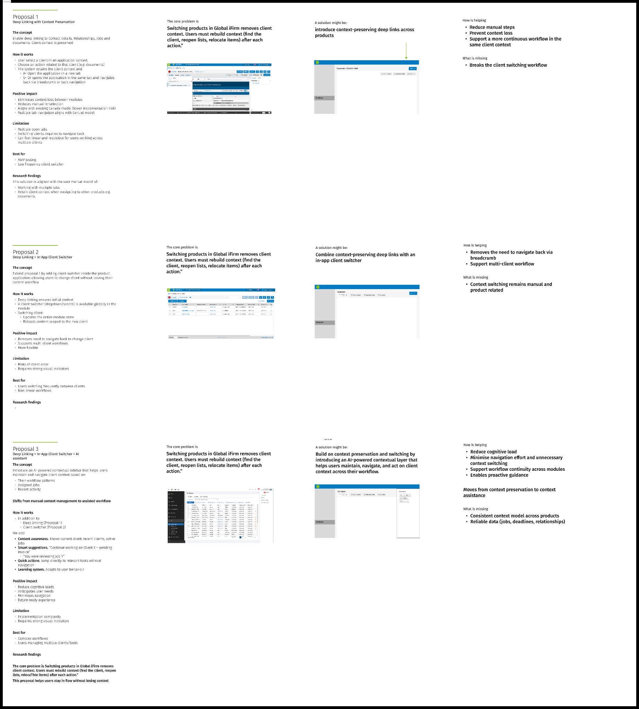
Which solution gives the right value for the effort?
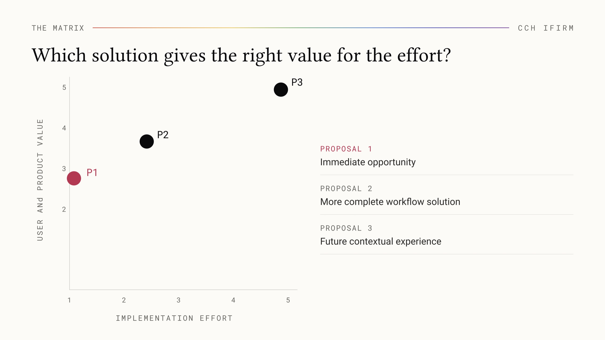
Proposal 1
Solve the core problem now. Keep the bigger opportunity open.
From an empty state
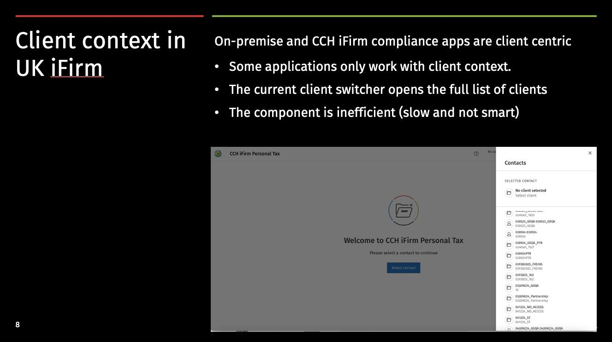
To a more connected experience
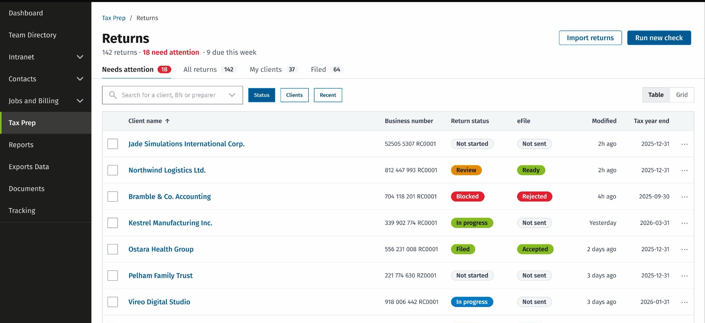
A simpler solution that worked for users, product and delivery
Client context is preserved
Users move between products without repeatedly re-establishing their context.
A more connected experience
The solution fits the existing product model and design system.
Months of development saved
Testing the direction with customers before it was built is what produced the saving. The evidence supported the simplest of the three proposals, so the team never spent the months the more ambitious options would have cost, and still solved the core problem.
My contribution was not just designing the interaction. I helped the team identify the right problem, explore the solution space, validate the direction with customers and converge on a solution that was both useful and feasible to build.
The solution had to feel like part of the product
The experience needed to work within the existing Global iFirm ecosystem, navigation model and design system.
Navigation
Preserve context across product transitions.
Information architecture
Keep the experience clear within the existing structure.
Design system
Use established components, patterns and behaviours.
Consistency
Make the experience feel native to the receiving product.
Auditing the old product was how we argued for the new one
Alongside the interaction work I ran accessibility audits of the legacy software. The findings were not filed as a compliance report. They were the argument: most of what the audits surfaced was something the design system had already solved, so the audits stopped being a separate backlog competing for the same engineering time and became the case for adopting the system faster.
Before AI I ran them by hand, screen by screen. Since, I run them with tools like Figma Make and GitHub Copilot. That changed the pace, not the judgement. The tools surface candidates; deciding which are real barriers, which are noise, and which are worth the team's next sprint is still the design decision.
Improve the journey without creating a new interaction model.
Context follows the user
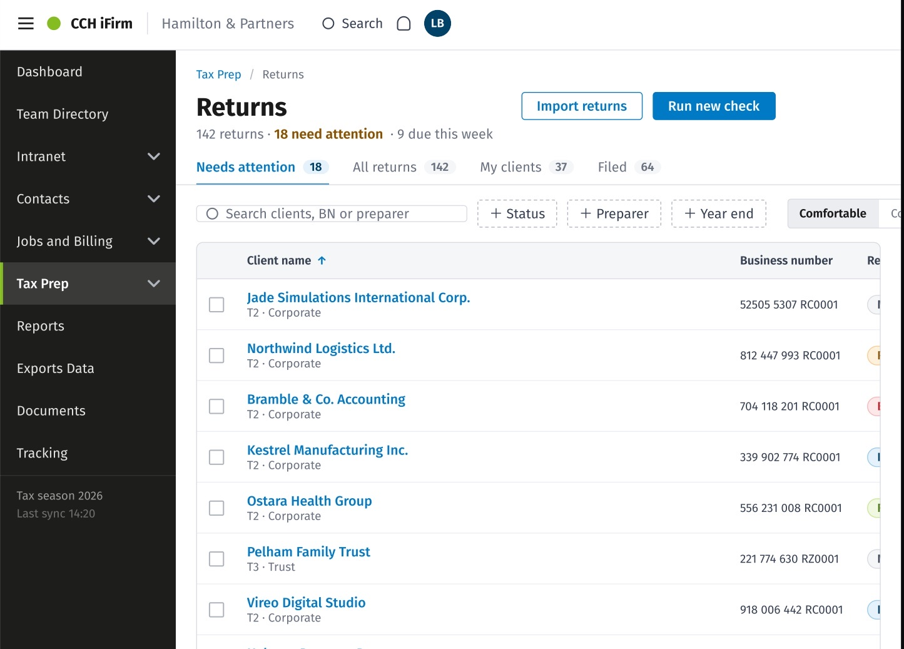
The client becomes the active context.
The user navigates to another product.
The destination opens within the same client context.
From static screens to a working experience
I translated the proposed experience into a functional coded prototype to test the interaction, behaviour and feasibility of the solution beyond static designs.
- Design
- Coded prototype
- Customer testing
- Evidence
- Confidence to proceed
- 01Test the real interaction. Identify potential issues before development and refine the solution with a more realistic representation of the product.
- 02Explore behaviour. Validate navigation, context and component behaviour across the experience.
- 03Reduce implementation uncertainty. Move beyond static screens and test the flow as users would actually experience it.
I built it by vibe coding with GitHub Copilot: describing the behaviour I wanted in plain language and steering the result, rather than writing every line myself. The judgement stayed mine. Which interaction to test, what the design system allowed, where the edge cases were, and when the prototype was faithful enough to put in front of a customer.
Testing the new experience with customers
We tested the experience with 5 customers who were transitioning from the on-premise product.
The taskOpen the return for client Acme and check a piece of information in the client record.
“It makes sense.”
“It's a question of getting used to it.”
The takeaway
The test indicated that customers transitioning from the on-premise experience could successfully understand and navigate the new structure, with most participants completing the task independently.
The remaining friction was primarily related to familiarity with the new experience rather than the underlying information architecture.
From design system to implementation-ready product
Design system
Components and variants. Reusable components.
Interaction and behaviour
States, interactions and edge cases.
Implementation specs
Layout and spacing, visual properties, responsive behaviour.
Developer handoff
Ready for development. Design to development.
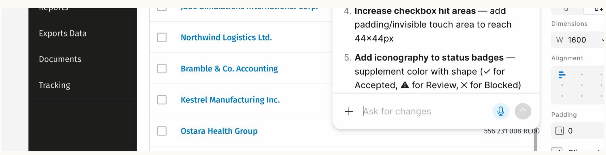
From design to implementation
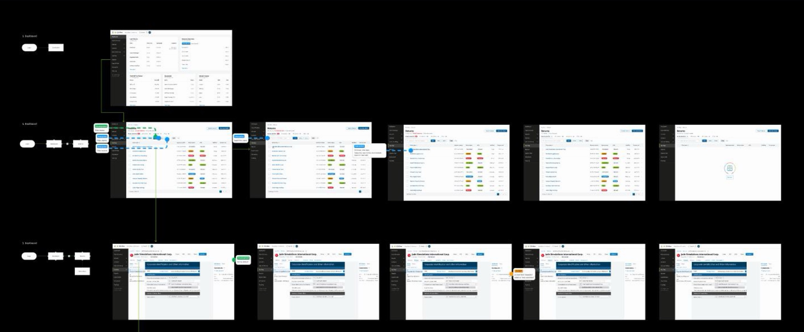
From preserving context to understanding context
An AI-powered contextual sidebar. The future opportunity was to make client context dynamic and helpful, rather than something the user has to manually maintain.
How the user typically works across products and tasks.
What work is currently assigned to them and which clients or jobs require attention.
The product understands what the user is working on and helps them stay within that context.
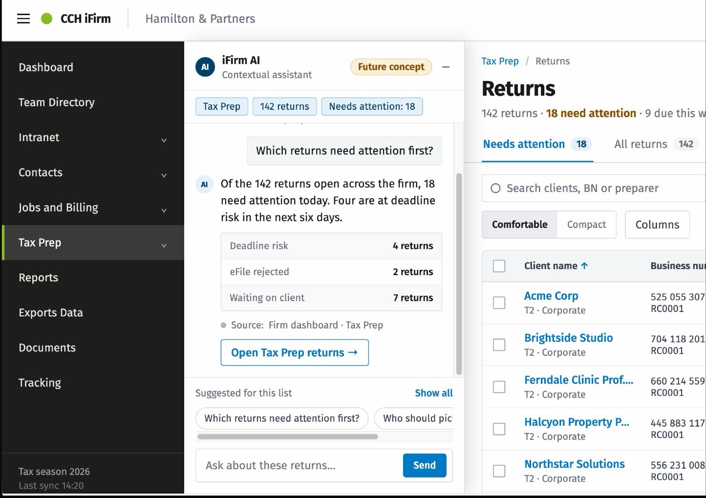
I stayed involved beyond the final screens, connecting design decisions to a working prototype, validating the experience with customers and translating the final solution into implementation-ready specifications.